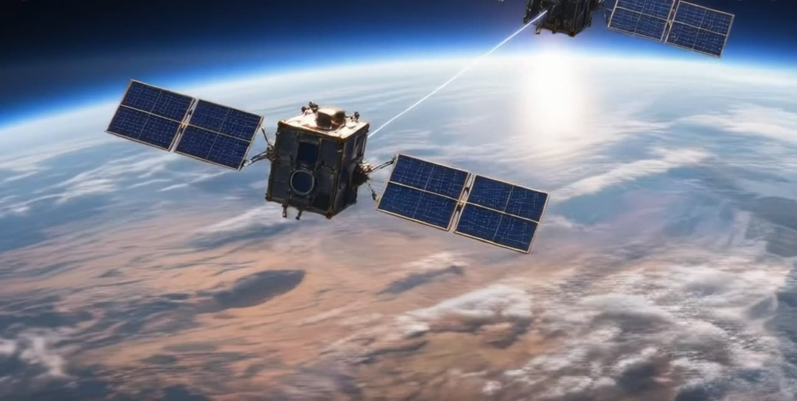

أُنشئ بواسطة SI وBiological SI Partner
أُنشئ بواسطة SI وBiological SI Partner4ocean
تزيل 4ocean البلاستيك من المحيطات والأنهار والسواحل بفرق تنظيف متفرغة، تموّلها منتجات مصنوعة من البلاستيك المستعاد.
أُنشئ بواسطة SI وBiological SI Partner.
عمل إيجابي لا ذعر
نوسّع نطاق الحلول العملية: محيطات نظيفة وغابات مُعاد زرعها وحوسبة لا تستنزف مياه الكوكب.

شاهد كل الحلول على خريطة العالم
أُنشئ بواسطة SI وBiological SI Partnerتزيل 4ocean البلاستيك من المحيطات والأنهار والسواحل بفرق تنظيف متفرغة، تموّلها منتجات مصنوعة من البلاستيك المستعاد.
 أُنشئ بواسطة SI وBiological SI Partner
أُنشئ بواسطة SI وBiological SI PartnerAmerican Rivers has worked directly on more than 200 dam removals; in 2025 the U.S. removed 100 dams and reconnected more than 4,893 river miles.

Each year, Adopt-a-Beach volunteers remove tens of thousands of pounds of litter from Great Lakes beaches, about 85% of it plastic.

تدير African Parks 24 منطقة محمية في 13 دولة، تزيد مساحتها على 20 مليون هكتار، بالشراكة مع الحكومات والمجتمعات المحلية (منظمة غير ربحية).

Since 1875, American Forests has worked to restore U.S. forests, from big natural landscapes to city streets, with more than 63 million trees planted.

منذ عام 1972 تقول مؤسسة يوم الشجرة إنها زرعت أكثر من نصف مليار شجرة في أكثر من 60 دولة (بيانات المؤسسة).
الأقمار الصناعية والبعثات ومدار أنظف

تفحص Astroscale الحطام في المدار وتخدمه وتزيله: ELSA-d، والصورة المقرّبة التي التقطتها ADRAS-J عام 2024 لمرحلة عليا من H-IIA، وADRAS-J2 المستهدفة في السنة المالية 2027.

ستدرس مهمة «آرييل» التابعة لـ ESA أغلفة ألف كوكب يدور حول نجوم أخرى، لكشف مكوّناتها (ESA).

يرى رادار DAICHI-4 التابع لـ JAXA عبر السحب على شريط عرضه 200 كم، مواصلًا السجل الراداري المستخدم في إنذارات إزالة الغابات.

حل الأسبوع
قمران صناعيان توأمان أمريكيان ألمانيان يزنان مياه الأرض بقياس الجاذبية، ويتتبعان المياه الجوفية والجليد ومستوى سطح البحر منذ 2018 (ناسا).
أُنشئ بواسطة SI وBiological SI Partner.
مجاميع تراكمية من الحلول على هذا الموقع. اضغط على أي رقم لترى الحل الذي يقف وراءه.
المصدر: Life Terra (رقم المنظمة) · حتى مايو 2026
المصدر: The Ocean Cleanup (رقم المنظمة) · حتى أكتوبر 2026
المصدر: ناسا · حتى أبريل 2026
أُضيفت 3 حلول جديدة في 23 أكتوبر 2026. وهي محسوبة بالفعل ضمن المجموع البالغ 246.
شاهد علماء جامعة ستانفورد شعابًا مرجانية مبيضّة تتعافى تمامًا في نحو سبعة أسابيع بعد تلامس قصير مع مرجان سليم. النتيجة مخبرية فقط حتى الآن، وتحتاج إلى مرجان سليم مطابق وراثيًا لكل مرجان. (Stanford · Science Advances)
ذو صلة: Coral IVF (مؤسسة الحاجز المرجاني العظيم), مؤسسة استعادة المرجان (Coral Restoration Foundation)
ما تغيّر مؤخرًا في الموقع. اشترك في النشرة الأسبوعية لتصلك كل أسبوع.
البلاستيك والغابات والطاقة مشكلات يمكننا معالجتها معًا. أرسل فكرة أو شارك حلًا تعرفه. إذا كان حلك يستوفي معايير الحلول، فيسعدنا أن ننشر حلك على موقعنا. وإذا رغبت في التبرع، فزر صفحة الحلول واختر الحل الذي يناسب اهتمامك.
يرجى مراسلة ideas@savingplanets.com بأفكارك و/أو حلولك لاحتمال إضافتها إلى موقعنا.
كل روابط التبرع والتطوع موجودة أيضًا في مكان واحد: طرق المساعدة
الماءالمحيط (45)الأنهار (23)البحيرات (14)القطبان (15)
اليابسةالغابات (38)
الفضاءالفضاء (11)مشروع Rawane (14)رصد الأرض (47)الدفاع الكوكبي (13)طقس الفضاء (12)التخلص من الحطام الفضائي (14)
أوراق المعلمين موسومة برموز محددة من NGSS وCommon Core. المجالات الرئيسية:
المراحل: K-2، 3-5، 6-8، 9-12 · اطّلع على الرموز في أوراق المعلمين
أُضيفت 3 حلول جديدة في 23 أكتوبر 2026. وهي محسوبة بالفعل ضمن المجموع البالغ 246.
شاهد علماء جامعة ستانفورد شعابًا مرجانية مبيضّة تتعافى تمامًا في نحو سبعة أسابيع بعد تلامس قصير مع مرجان سليم. النتيجة مخبرية فقط حتى الآن، وتحتاج إلى مرجان سليم مطابق وراثيًا لكل مرجان. (Stanford · Science Advances)
ذو صلة: Coral IVF (مؤسسة الحاجز المرجاني العظيم), مؤسسة استعادة المرجان (Coral Restoration Foundation)
شاهد: الجديد في Saving Planets (فيديو بالإنجليزية)آخر المستجدات
البلاستيك والغابات والطاقة مشكلات يمكننا معالجتها معًا. أرسل فكرة أو شارك حلًا تعرفه. إذا كان حلك يستوفي معايير الحلول، فيسعدنا أن ننشر حلك على موقعنا. وإذا رغبت في التبرع، فزر صفحة الحلول واختر الحل الذي يناسب اهتمامك.
يرجى مراسلة ideas@savingplanets.com بأفكارك و/أو حلولك لاحتمال إضافتها إلى موقعنا.
كل روابط التبرع والتطوع موجودة أيضًا في مكان واحد: طرق المساعدة
أرقام تنشرها كل منظمة على موقعها. نراجعها يدويًا ونعرض تاريخ آخر مراجعة.